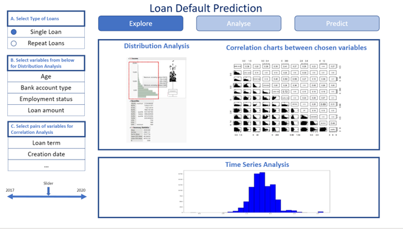
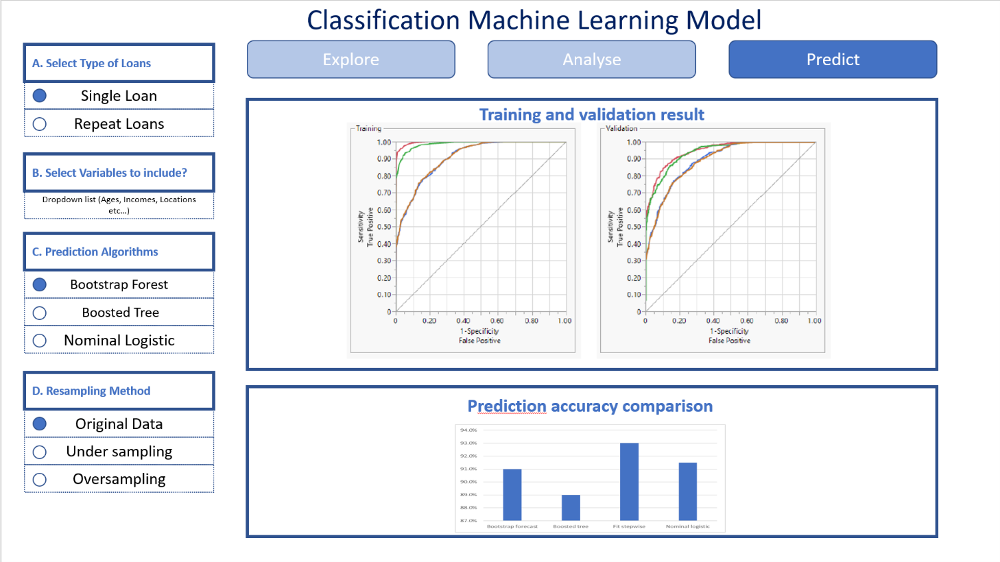

R-Shiny Application Project Proposal - Loan Default Prediction
Background
Loan lending offers substantial profits, but also carries the risk of customers failing to repay loans on time, known as loan default risk, which is a type of credit risk.
To manage uncertainty, lending institutions have established lending standards and created predictive models to better evaluate the likelihood of loan repayment through credit risk assessment of customers.
Over the past thirty years, loan default risk assessment has progressed from traditional credit scoring systems to data modeling utilizing data analytics and machine learning techniques.
Motivation
This project aims to explore R technologies to develop reusable solutions (such as R-shiny application) to support users to perform data exploration, analysis, and prediction from set of customer variables to select the optimal variables to perform the customer loan default prediction.
Data
The data that we are using, is from Data Science Nigeria Challenge #1: Loan Default Prediction.
There are two types of risk models in general:
1st new business risk, which would be used to assess the risk of application(s) associated with the first loan that he/she applies.
2nd repeat or behavior risk model, in which case the customer has been a client and applies for a repeat loan. Overall, we can split the data into 2 main subsets of data: For Single Loans or Repeat Loans based on number of loans per customer in the data.
Approach
To effectively predict the customer loan default, this study aims to provide following approaches to explore, analysis, mining factors are important to evaluate loan default.
Loan default factor exploration: it provides visualization on all or selected factors, to allow users to understand the trends of the variables, correlation of variables between each other.
Loan default factor mining: it provides deep dive analysis for customer further analysis the importance of loan default factors for prediction.
Loan default prediction: it provides interfaces for users to select variables, sampling methods, and predictive algorithms to model and analyze factors for customer loan default prediction.
R-Shiny App
Customer loan default factors exploration
The application where users can perform Exploratory Data Analysis on this dataset, with the more common tools such as Distribution Analysis, to measure the skewness of data.
Another tool can be employed is Deviation Analysis (box plot), to have general understanding of 5 number summaries (min / max , lower quantile / upper quantile and median).
A deviation analysis would also show outliers from dataset.
Scatterplot also provided to present the correlation between different variables and their corresponding correlation coefficients.

In terms of multi-collinearity, the results will assist users to identify which variables to be excluded when perform classification models later.
Customer loan default factors mining
This section provides deep dive analysis on variables relationship between each other, both heatmap plot and mosaic plot are provided for modeling the relationship between continuous variables or categorical variables.
Users can perform heatmap and mosaic plot on different variables to determine whether which variables that can be applied to the subsequent prediction models
Customer loan default prediction
Upon analyzed variables suitable for loan default prediction from section 1 and section 2, the section 3 here is provided interactive interface allow users to between different resampling methods, to see the effects of whether oversampling versus under sampling versus original data.
Users also can select different classification models, and our applications will showcase the results of the models using AOC analysis for training dataset and validation dataset.
Based on the results of the previous multi correlated analysis, users can choose to include or exclude the highly correlated variables before building the models.

The model will show the comparison results of different variables selected with different methods selected, so that users can decide which variables and method are suite to the business requirement.